<title>TripUp konkurentska analiza</title>
<meta name="claude:viewport-fit-sides" content="cover">
<link rel="preconnect" href="https://fonts.googleapis.com">
<link rel="preconnect" href="https://fonts.gstatic.com" crossorigin>
<link rel="stylesheet" href="https://fonts.googleapis.com/css2?family=Schibsted+Grotesk:wght@500;700;800&family=Public+Sans:ital,wght@0,400;0,500;0,600;0,700;1,400&family=JetBrains+Mono:wght@400;500&display=swap">
<style>
/* Layout: research board. Sticky section nav, scenario map table up top, then one card per app (notes in three columns + a strip of 3-5 phone screens). Lisbon palette: azulejo blue + tram-28 yellow on a cool paper ground. */
:root {
  --bg: #F2F4F7;
  --surface: #FFFFFF;
  --ink: #101A2C;
  --muted: #586379;
  --line: #D8DEE7;
  --azulejo: #1C4FB0;
  --azulejo-soft: #E4ECFA;
  --tram: #F2B705;
  --tram-soft: #FFF4CC;
  --tram-ink: #5B4300;
  --good: #1D7A4B;
  --good-soft: #E1F3E9;
  --shot-bg: #E9EDF3;
  --font-display: "Schibsted Grotesk", "Helvetica Neue", Arial, sans-serif;
  --font-body: "Public Sans", -apple-system, "Segoe UI", Roboto, sans-serif;
  --font-mono: "JetBrains Mono", ui-monospace, "SF Mono", Menlo, monospace;
}
@media (prefers-color-scheme: dark) {
  :root:not([data-theme="light"]) {
    --bg: #0B1220; --surface: #121B2D; --ink: #E7ECF4; --muted: #9AA6BA; --line: #26324A;
    --azulejo: #86A9FF; --azulejo-soft: #18284D; --tram: #F5C531; --tram-soft: #3A2F0A; --tram-ink: #FBE3A0;
    --good: #6BD69C; --good-soft: #10301F; --shot-bg: #1A2438; color-scheme: dark;
  }
}
:root[data-theme="dark"] {
  --bg: #0B1220; --surface: #121B2D; --ink: #E7ECF4; --muted: #9AA6BA; --line: #26324A;
  --azulejo: #86A9FF; --azulejo-soft: #18284D; --tram: #F5C531; --tram-soft: #3A2F0A; --tram-ink: #FBE3A0;
  --good: #6BD69C; --good-soft: #10301F; --shot-bg: #1A2438; color-scheme: dark;
}
* { box-sizing: border-box; }
body {
  background: var(--bg); color: var(--ink);
  font-family: var(--font-body); font-size: 16px; line-height: 1.55;
  -webkit-font-smoothing: antialiased;
}
body::before { content: ""; position: fixed; inset: 0 0 auto; height: env(safe-area-inset-top, 0px); z-index: 10; background: var(--surface); }
a { color: var(--azulejo); }
a:focus-visible, button:focus-visible { outline: 2px solid var(--azulejo); outline-offset: 2px; border-radius: 4px; }
.wrap {
  max-width: 1160px; margin: 0 auto;
  padding-left: max(16px, env(safe-area-inset-left, 0px));
  padding-right: max(16px, env(safe-area-inset-right, 0px));
}
h1, h2, h3 { font-family: var(--font-display); text-wrap: balance; margin: 0; letter-spacing: -0.01em; }
p { margin: 0; }
.mono { font-family: var(--font-mono); font-variant-numeric: tabular-nums; }
.eyebrow { font-family: var(--font-mono); font-size: 12px; letter-spacing: 0.08em; text-transform: uppercase; color: var(--muted); }

/* nav */
.nav { position: sticky; top: env(safe-area-inset-top, 0px); z-index: 5; background: var(--surface); border-bottom: 1px solid var(--line); }
.nav .wrap { display: flex; gap: 4px; overflow-x: auto; padding-block: 8px; scrollbar-width: none; }
.nav .wrap::-webkit-scrollbar { display: none; }
.nav a { flex: none; text-decoration: none; color: var(--muted); font-size: 14px; font-weight: 500; padding: 6px 10px; border-radius: 6px; white-space: nowrap; }
.nav a:hover { color: var(--ink); background: var(--bg); }
.nav .brand { color: var(--ink); font-family: var(--font-display); font-weight: 800; margin-right: 8px; }

/* hero */
.hero { padding-block: 56px 40px; display: grid; gap: 20px; }
.hero h1 { font-size: clamp(32px, 5vw, 52px); line-height: 1.05; font-weight: 800; max-width: 22ch; }
.hero h1 em { font-style: normal; background: linear-gradient(transparent 62%, var(--tram) 62%, var(--tram) 90%, transparent 90%); }
.hero .lead { font-size: 18px; color: var(--muted); max-width: 68ch; }
.meta { display: flex; flex-wrap: wrap; gap: 8px 20px; font-size: 13px; color: var(--muted); }
.meta b { color: var(--ink); font-weight: 600; }

section { padding-block: 36px; border-top: 1px solid var(--line); scroll-margin-top: 64px; }
.sec-head { display: grid; gap: 8px; margin-bottom: 24px; max-width: 72ch; }
.sec-head h2 { font-size: clamp(24px, 3vw, 32px); font-weight: 800; }
.sec-head p { color: var(--muted); }

/* takeaways */
.takeaways { display: grid; grid-template-columns: repeat(auto-fit, minmax(300px, 1fr)); gap: 16px; }
.take { background: var(--surface); border: 1px solid var(--line); border-radius: 10px; padding: 18px 20px; display: grid; gap: 6px; align-content: start; }
.take h3 { font-size: 17px; font-weight: 700; line-height: 1.3; }
.take p { color: var(--muted); font-size: 15px; }
.take.key { background: var(--tram-soft); border-color: transparent; }
.take.key h3, .take.key p { color: var(--tram-ink); }

/* tables */
.table-scroll { overflow-x: auto; border: 1px solid var(--line); border-radius: 10px; background: var(--surface); }
table { border-collapse: collapse; width: 100%; font-size: 14px; }
th, td { text-align: left; vertical-align: top; padding: 12px 14px; border-bottom: 1px solid var(--line); }
tr:last-child td { border-bottom: 0; }
th { font-family: var(--font-mono); font-size: 11px; font-weight: 500; letter-spacing: 0.06em; text-transform: uppercase; color: var(--muted); background: var(--bg); white-space: nowrap; }
td.num { font-family: var(--font-mono); font-variant-numeric: tabular-nums; white-space: nowrap; text-align: right; }
th.num { text-align: right; }
td .sub { display: block; color: var(--muted); font-size: 13px; margin-top: 2px; }
.scen td:first-child { font-family: var(--font-mono); color: var(--muted); width: 1%; white-space: nowrap; }
.scen td:nth-child(2) { font-weight: 600; min-width: 190px; }
.scen td:nth-child(3) { min-width: 170px; }
.scen td:nth-child(4) { min-width: 260px; }
.market td:first-child { font-weight: 600; white-space: nowrap; }

.chip { display: inline-block; font-family: var(--font-mono); font-size: 11px; font-weight: 500; letter-spacing: 0.04em; padding: 3px 8px; border-radius: 999px; white-space: nowrap; }
.chip.solved { background: var(--good-soft); color: var(--good); }
.chip.partial { background: var(--azulejo-soft); color: var(--azulejo); }
.chip.gap { background: var(--tram); color: #3A2A00; }

/* category + app cards */
.cat-cover { display: flex; flex-wrap: wrap; gap: 6px; margin-top: 4px; }
.cat-cover span { font-family: var(--font-mono); font-size: 12px; color: var(--muted); border: 1px solid var(--line); border-radius: 999px; padding: 2px 9px; }
.apps { display: grid; gap: 20px; }
.app { background: var(--surface); border: 1px solid var(--line); border-radius: 12px; padding: 22px; display: grid; gap: 18px; min-width: 0; }
.app-head { display: flex; flex-wrap: wrap; align-items: baseline; justify-content: space-between; gap: 6px 16px; }
.app-head h3 { font-size: 24px; font-weight: 800; }
.app-head .tag { font-size: 14px; color: var(--muted); }
.stats { font-family: var(--font-mono); font-size: 13px; color: var(--muted); }
.stats b { color: var(--ink); font-weight: 500; }
.notes { display: grid; grid-template-columns: repeat(3, minmax(0, 1fr)); gap: 16px; }
.note { display: grid; gap: 8px; align-content: start; min-width: 0; }
.note h4 { margin: 0; font-family: var(--font-mono); font-size: 11px; font-weight: 500; letter-spacing: 0.08em; text-transform: uppercase; color: var(--muted); }
.note ul { margin: 0; padding-left: 18px; display: grid; gap: 6px; font-size: 14.5px; }
.note.tripup { background: var(--azulejo-soft); border-radius: 8px; padding: 14px 16px; }
.note.tripup h4 { color: var(--azulejo); }
.shots { display: grid; grid-auto-flow: column; grid-auto-columns: 170px; gap: 14px; overflow-x: auto; padding-bottom: 6px; scroll-snap-type: x proximity; }
.shots.wide { grid-auto-columns: 260px; }
figure { margin: 0; display: grid; gap: 8px; align-content: start; scroll-snap-align: start; }
figure button { all: unset; cursor: zoom-in; display: block; border-radius: 10px; overflow: hidden; background: var(--shot-bg); border: 1px solid var(--line); }
figure button:focus-visible { outline: 2px solid var(--azulejo); outline-offset: 2px; }
figure img { display: block; width: 100%; height: auto; }
figcaption { font-size: 13px; line-height: 1.4; color: var(--muted); }
figcaption b { color: var(--ink); font-weight: 600; display: block; }
.textcard .notes { grid-template-columns: repeat(2, minmax(0, 1fr)); }

/* adopt / improve / different */
.verdicts { display: grid; grid-template-columns: repeat(3, minmax(0, 1fr)); gap: 16px; }
.verdict { background: var(--surface); border: 1px solid var(--line); border-radius: 12px; padding: 20px; display: grid; gap: 12px; align-content: start; min-width: 0; }
.verdict h3 { font-size: 20px; font-weight: 800; }
.verdict > p { color: var(--muted); font-size: 14px; }
.verdict ul { margin: 0; padding-left: 18px; display: grid; gap: 10px; font-size: 14.5px; }
.verdict li span { color: var(--muted); }
.verdict.diff { background: var(--tram-soft); border-color: transparent; }
.verdict.diff h3, .verdict.diff > p, .verdict.diff li, .verdict.diff li span { color: var(--tram-ink); }

.sources { columns: 2 320px; column-gap: 32px; font-size: 13.5px; color: var(--muted); }
.sources p { break-inside: avoid; margin-bottom: 10px; }
.sources a { word-break: break-word; }
footer { padding-block: 32px 56px; color: var(--muted); font-size: 13px; border-top: 1px solid var(--line); }

/* lightbox */
dialog.lb { border: 0; padding: 0; background: transparent; max-width: min(92vw, 520px); max-height: 92vh; }
dialog.lb::backdrop { background: rgba(6, 10, 20, 0.78); }
dialog.lb img { display: block; max-width: 100%; max-height: 86vh; width: auto; height: auto; border-radius: 12px; margin: 0 auto; }
dialog.lb p { color: #E7ECF4; text-align: center; font-size: 14px; margin-top: 10px; }
dialog.lb .close { position: absolute; top: 8px; right: 8px; background: rgba(0,0,0,0.6); color: #fff; border: 0; border-radius: 999px; width: 36px; height: 36px; font-size: 20px; cursor: pointer; }

@media (max-width: 860px) {
  .notes, .textcard .notes, .verdicts { grid-template-columns: 1fr; }
  .app { padding: 18px 16px; }
  .shots { grid-auto-columns: 150px; }
  .shots.wide { grid-auto-columns: 230px; }
}
@media (prefers-reduced-motion: reduce) { * { scroll-behavior: auto !important; } }
</style>

<nav class="nav" aria-label="Sekcije">
  <div class="wrap">
    <a class="brand" href="#top">TripUp research</a>
    <a href="#zakljucci">Zaključci</a>
    <a href="#scenario">Mapa scenarija</a>
    <a href="#trziste">Tržište</a>
    <a href="#planiranje">Planiranje</a>
    <a href="#odluke">Odluke i ankete</a>
    <a href="#troskovi">Troškovi</a>
    <a href="#placanje">Plaćanje</a>
    <a href="#pravac">Preuzmi / unapredi / drugačije</a>
    <a href="#izvori">Izvori</a>
  </div>
</nav>

<main class="wrap" id="top">
  <header class="hero">
    <span class="eyebrow">Bending Spoons · Task #2 · Konkurentski research</span>
    <h1>Ko danas rešava delove TripUp scenarija, i gde je <em>prazan prostor</em></h1>
    <p class="lead">Pregled najpopularnijih aplikacija koje pokrivaju pojedinačne korake iz Lisabon scenarija: planiranje i itinerer, grupne odluke i ankete, deljenje troškova, plaćanje. Za svaku: šta radi dobro, gde puca i šta TripUp treba da preuzme, unapredi ili uradi drugačije.</p>
    <div class="meta">
      <span><b>13</b> aplikacija</span>
      <span><b>38</b> ključnih ekrana</span>
      <span><b>4</b> kategorije</span>
      <span>App Store podaci: <b>20. okt 2026.</b></span>
    </div>
  </header>

  <section id="zakljucci">
    <div class="sec-head">
      <span class="eyebrow">Ključni zaključci</span>
      <h2>Devet stvari koje treba znati pre wireframe-a</h2>
      <p>Žuto označene kartice su dva koraka scenarija koje danas ne radi nijedna velika aplikacija. Tu je najjača priča za TripUp.</p>
    </div>
    <div class="takeaways">
      <div class="take key"><h3>Odluka umire u chatu</h3><p>Nijedna velika aplikacija ne zatvara anketu i ne upisuje pobednika u zajednički plan sama. Partiful i Doodle su najbliži, ali tamo host bira pobednika, i to samo za datum. Male beta aplikacije (Truce, TripRelay) tvrde da rade ceo krug, pa je prostor otvoren, ali ne zauvek.</p></div>
      <div class="take"><h3>Tržište je razbijeno na specijaliste</h3><p>Itinerer drže Wanderlog i TripIt, ankete WhatsApp i iMessage, troškove Splitwise i Tricount, plaćanje Venmo i Revolut. Troupe, najpoznatija all-in-one aplikacija za grupna putovanja, ugašen je. TripUp se takmiči spojem koraka, ne pojedinačnom funkcijom.</p></div>
      <div class="take"><h3>Ankete su sazrele, opcije nisu</h3><p>U 2026. WhatsApp i Telegram su dodali rok zatvaranja i anonimne glasove, a iMessage i Telegram dozvoljavaju svima da dodaju opciju. Ali opcija je i dalje goli tekst: restoran bez slike, ocene, cene i udaljenosti.</p></div>
      <div class="take"><h3>Isključivanje iz stavke nije rešeno bez slikanja računa</h3><p>Tricount, Venmo, Revolut, Splid i Settle Up traže poseban trošak ili ručnu računicu da dvoje ne plate vino. Splitwise je 14. oktobra 2026. pustio besplatni Itemize (US/UK), ali kroz slikanje računa.</p></div>
      <div class="take"><h3>Minimizacija dugova zbunjuje</h3><p>Postoji skoro svuda, ali Splitwise i Tricount imaju help članke na temu „zašto plaćam nekome ko nije platio za mene“. Niko ne pokazuje „pre i posle“ niti zašto je predložen baš taj transfer.</p></div>
      <div class="take"><h3>Plaćanje je regionalno i rascepkano</h3><p>Venmo radi samo u SAD, Splitwise Pay u SAD i delu EU, Tricount linkovi u četiri zemlje, Revolut instant samo između svojih korisnika. Svuda postoji ručno „označi kao plaćeno“ kao rezerva.</p></div>
      <div class="take key"><h3>Niko ne zatvara krug za grupu</h3><p>Venmo jedini pokazuje „all paid up“ na vrhu feeda. Nijedna aplikacija ne javlja celoj grupi da su svi kvit niti nudi zatvaranje tripa. To je tačno korak kojim se scenario završava.</p></div>
      <div class="take"><h3>Gost bez naloga je standard</h3><p>Partiful, Splid, Lambus i Splitwise Itemize puštaju ljude preko linka ili QR koda bez registracije. Na Wanderlog se korisnici žale baš zbog prisilne registracije. Ren mora da glasa i vidi svoj dug iz linka.</p></div>
      <div class="take"><h3>Paywall na unos troškova kažnjava putovanja</h3><p>Splitwise dozvoljava 4 troška dnevno besplatno, a na putovanju ih je najviše; ocena mu je pala na 4,0. Tricount je potpuno besplatan, Settle Up prodaje propusnicu po grupi (nedelja $5,99).</p></div>
    </div>
  </section>

  <section id="scenario">
    <div class="sec-head">
      <span class="eyebrow">Mapa scenarija</span>
      <h2>Svaki korak Lisabon scenarija, ko ga danas radi najbolje i šta TripUp treba</h2>
      <p>Redosled prati korisnički scenario iz brief-a. „Prilika“ znači da nijedna popularna aplikacija taj korak ne radi.</p>
    </div>
    <div class="table-scroll">
      <table class="scen">
        <thead><tr><th>#</th><th>Korak scenarija</th><th>Najbolja referenca</th><th>Pattern za TripUp</th><th>Tržište</th></tr></thead>
        <tbody>
          <tr><td>01</td><td>Home sa svim tripovima</td><td>TripIt, Wanderlog</td><td>Aktivni trip kao istaknuta „live“ kartica, predstojeći ispod, prošli sklopljeni</td><td><span class="chip solved">Rešeno</span></td></tr>
          <tr><td>02</td><td>Grupni pregled tripa</td><td>Splitwise grupa, Wanderlog trip</td><td>Trip kao centar: članovi, otvorene ankete, moj balans i sledeća stavka na jednom ekranu</td><td><span class="chip partial">Delimično</span></td></tr>
          <tr><td>03</td><td>Ren se pridružuje usred tripa</td><td>Partiful link, Lambus PIN i QR, Splid</td><td>Link ili QR, glasanje bez naloga, rezime već donetih odluka, bez nasleđivanja starih troškova</td><td><span class="chip partial">Delimično</span></td></tr>
          <tr><td>04</td><td>Anketa sa tri restorana</td><td>WhatsApp, iMessage, Telegram (lokacija u opciji)</td><td>Opcija je kartica mesta: slika, ocena, cena, minuti hoda, oznaka atmosfere; rok zatvaranja</td><td><span class="chip partial">Delimično</span></td></tr>
          <tr><td>05</td><td>Notifikacija svima</td><td>WhatsApp grupisani glasovi i @all</td><td>Participant dobija push na otvaranje i zatvaranje; kreator sažetak umesto pusha za svaki glas</td><td><span class="chip solved">Rešeno</span></td></tr>
          <tr><td>06</td><td>Vodeća opcija uživo</td><td>iMessage trake sa avatarima</td><td>Čip „Vodi“, razlika u glasovima, odbrojavanje do zatvaranja, lista „još nisu glasali“</td><td><span class="chip solved">Rešeno</span></td></tr>
          <tr><td>07</td><td>Pobednik automatski u itinerer</td><td>Niko od velikih; Partiful i Doodle samo za datum, uz ručni izbor</td><td>Zatvaranje ankete upisuje mesto u tačan dan i vreme, sa adresom i detaljima; organizator može da poništi</td><td><span class="chip gap">Prilika</span></td></tr>
          <tr><td>08</td><td>Trošak večere, Ren i Nic bez vina</td><td>Splitwise Itemize (US/UK), Tab</td><td>Stavka „Vino“ unutar večere, tap na dva avatara da ih isključiš, iznos po osobi se menja uživo</td><td><span class="chip partial">Delimično</span></td></tr>
          <tr><td>09</td><td>Balansi i najmanje transfera</td><td>Settle Up, Tricount, Splitwise</td><td>„6 transfera postaje 2“ kao vizuelni dokaz, plus objašnjenje zašto baš taj transfer</td><td><span class="chip solved">Rešeno</span></td></tr>
          <tr><td>10</td><td>Plaćanje u aplikaciji</td><td>Venmo (SAD), Revolut (između korisnika), Tricount + bunq</td><td>Jedno dugme „Plati“ sa popunjenim iznosom; najbolja šina za svaki par; dug se sam zatvara</td><td><span class="chip partial">Delimično</span></td></tr>
          <tr><td>11</td><td>Potvrda grupi da su svi kvit</td><td>Venmo „all paid up“ u feedu</td><td>Grupni događaj u feedu i push svima; trip prelazi u stanje „Završeno“</td><td><span class="chip gap">Prilika</span></td></tr>
        </tbody>
      </table>
    </div>
  </section>

  <section id="trziste">
    <div class="sec-head">
      <span class="eyebrow">Tržište u brojevima</span>
      <h2>Lideri su specijalisti. All-in-one grupna putovanja nemaju lidera.</h2>
      <p>Broj ocena na App Store-u kao gruba mera popularnosti. Troškovi su regionalni: Splitwise drži SAD, Tricount i Splid drže Evropu. Namenske aplikacije za grupna putovanja koje spajaju sve korake imaju po nekoliko ocena.</p>
    </div>
    <div class="table-scroll">
      <table class="market">
        <thead>
          <tr><th>Aplikacija</th><th>Kategorija</th><th class="num">Ocene (US)</th><th class="num">Prosek</th><th>Evropa i napomene</th></tr>
        </thead>
        <tbody>
          <tr><td>WhatsApp</td><td>Odluke i ankete</td><td class="num">18.809.469</td><td class="num">4,68</td><td>Podrazumevani kanal za grupna putovanja u Evropi</td></tr>
          <tr><td>Venmo</td><td>Plaćanje</td><td class="num">15.473.128</td><td class="num">4,85</td><td>Samo SAD</td></tr>
          <tr><td>TripIt</td><td>Itinerer</td><td class="num">312.249</td><td class="num">4,84</td><td>Poslovni i solo putnici</td></tr>
          <tr><td>Partiful</td><td>Odluke i pozivi</td><td class="num">272.849</td><td class="num">4,95</td><td>Događaji, ne višednevni tripovi</td></tr>
          <tr><td>Revolut</td><td>Plaćanje</td><td class="num">73.999</td><td class="num">4,72</td><td>UK 1.092.789 · FR 562.720 · DE 249.563</td></tr>
          <tr><td>Howbout</td><td>Odluke i planovi</td><td class="num">51.094</td><td class="num">4,82</td><td>Deljeni kalendar za prijatelje</td></tr>
          <tr><td>Wanderlog</td><td>Itinerer</td><td class="num">36.001</td><td class="num">4,90</td><td>UK 3.766 · IT 1.296 · FR 1.036</td></tr>
          <tr><td>Splitwise</td><td>Troškovi</td><td class="num">28.955</td><td class="num">4,00</td><td>DE 9.700 (4,24) · UK 7.451 (4,17) · FR 487 (3,92)</td></tr>
          <tr><td>Tricount</td><td>Troškovi</td><td class="num">7.460</td><td class="num">4,88</td><td>FR 97.002 · DE 14.908 · IT 13.402</td></tr>
          <tr><td>Splid</td><td>Troškovi</td><td class="num">4.160</td><td class="num">4,91</td><td>DE 40.011 (4,89) · IT 7.066</td></tr>
          <tr><td>Settle Up</td><td>Troškovi</td><td class="num">1.771</td><td class="num">4,82</td><td>Ujednačeno po tržištima, ~1.200 po zemlji</td></tr>
          <tr><td>Tab</td><td>Troškovi (račun)</td><td class="num">1.157</td><td class="num">4,22</td><td>Itemizacija računa, Venmo integracija</td></tr>
          <tr><td>All-in-one grupna putovanja<span class="sub">Lambus, AvoSquado, WeGoing, Pilot</span></td><td>Sve odjednom</td><td class="num">81 / 10 / 5 / 2</td><td class="num">–</td><td>JetBlue-ov Troupe, najpoznatiji u ovoj kategoriji, ugašen je. Truce i TripRelay tvrde da rade ceo krug anketa → itinerer, ali su u beti</td></tr>
        </tbody>
      </table>
    </div>
  </section>

  <section id="planiranje">
    <div class="sec-head">
      <span class="eyebrow">Kategorija 1</span>
      <h2>Planiranje i itinerer</h2>
      <p>Odakle korisnik kreće (lista tripova) i gde završava pobednik ankete (zajednički plan).</p>
      <div class="cat-cover"><span>Korak 1: home</span><span>Korak 2: trip</span><span>Korak 7: itinerer</span></div>
    </div>
    <div class="apps">

      <article class="app">
        <div class="app-head">
          <div><h3>Wanderlog</h3><span class="tag">Kolaborativni itinerer, „Google Docs za putovanja“</span></div>
          <span class="stats">★ <b>4,90</b> · 36.001 ocena (US)</span>
        </div>
        <div class="notes">
          <div class="note"><h4>Radi dobro</h4><ul><li>Itinerer po danima sa mapom, vremenom puta između stavki i optimizacijom rute</li><li>Real-time zajedničko uređivanje, poziv mejlom ili linkom sa pravom „edit“ ili „view-only“</li><li>Troškovi i podela u istom tripu; 2025–26 AI asistent i „Import from anywhere“ (link ili reel postaje trip)</li></ul></div>
          <div class="note"><h4>Slabosti</h4><ul><li>Nema glasanja ni anketa: odluke se donose u nekoj drugoj aplikaciji</li><li>Korisnici prijavljuju da pozvane tera kroz registraciju i da se izmene ne sinhronizuju uvek</li><li>Offline pristup je iza Pro pretplate; participant mora da se snađe u četiri taba</li></ul></div>
          <div class="note tripup"><h4>Za TripUp</h4><ul><li>Preuzmi dnevni timeline sa mapom i „X min hoda do sledeće stavke“</li><li>Participantu ne treba ceo dokument: podrazumevani prikaz je „Danas / Sledeće“</li><li>Pobednik ankete treba da sleti baš u ovakav timeline, sa vremenom i lokacijom</li></ul></div>
        </div>
        <div class="shots">
          <figure><button type="button">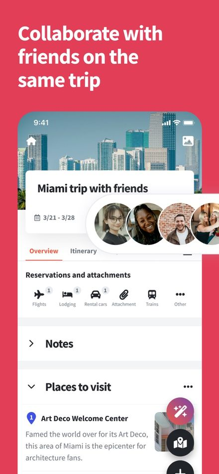</button><figcaption><b>Trip sa saputnicima</b>Avatari na naslovnoj kartici tripa, dugme Share za poziv.</figcaption></figure>
          <figure><button type="button">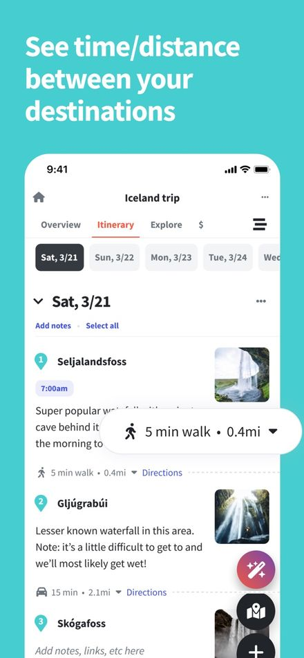</button><figcaption><b>Itinerer po danima</b>Tabovi po datumu, vreme hoda i razdaljina između stavki.</figcaption></figure>
          <figure><button type="button">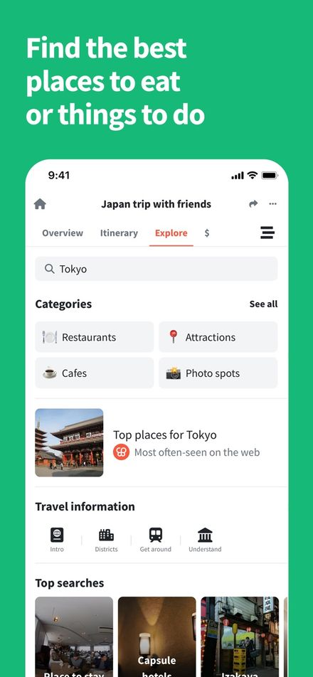</button><figcaption><b>Explore: gde jesti</b>Kategorije i liste mesta za destinaciju.</figcaption></figure>
          <figure><button type="button">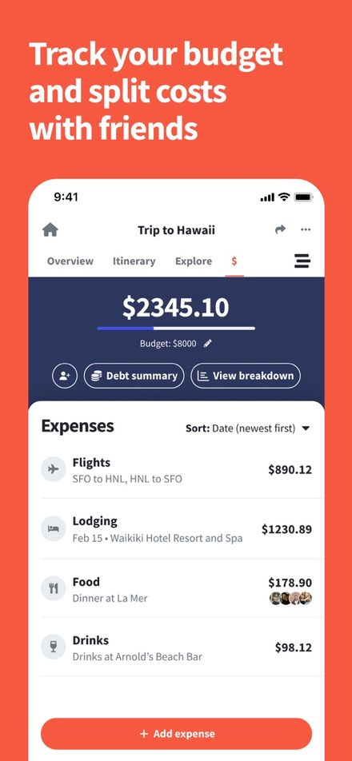</button><figcaption><b>Budžet i troškovi</b>Ukupno potrošeno, Debt summary, lista troškova.</figcaption></figure>
        </div>
      </article>

      <article class="app">
        <div class="app-head">
          <div><h3>TripIt</h3><span class="tag">Itinerer iz email potvrda</span></div>
          <span class="stats">★ <b>4,84</b> · 312.249 ocena (US)</span>
        </div>
        <div class="notes">
          <div class="note"><h4>Radi dobro</h4><ul><li>Home je lista: predstojeći tripovi gore, prošli ispod</li><li>Itinerer se sam pravi iz prosleđenih mejl potvrda</li><li>Jasne uloge: „Can view“, „Can edit“, „Can edit and is traveling“; javni link krije brojeve rezervacija i cene</li></ul></div>
          <div class="note"><h4>Slabosti</h4><ul><li>Pravljen za logistiku solo i poslovnih putnika (letovi, hoteli), ne za grupne odluke</li><li>Nema anketa ni troškova</li><li>Real-time upozorenja su samo u Pro verziji</li></ul></div>
          <div class="note tripup"><h4>Za TripUp</h4><ul><li>Home: aktivni trip kao istaknuta „live“ kartica, predstojeći ispod, prošli sklopljeni</li><li>Uloga „putuje“ naspram „samo prati“ odgovara Renu, koji dolazi samo na večeru</li><li>Promena plana se vidi i kao push i kao stanje stavke u timeline-u</li></ul></div>
        </div>
        <div class="shots">
          <figure><button type="button">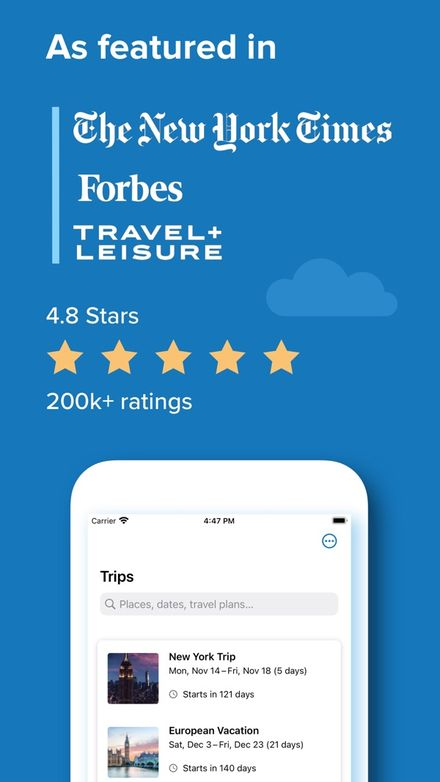</button><figcaption><b>Home: lista tripova</b>Svaki trip kao red sa datumima i „Starts in X days“.</figcaption></figure>
          <figure><button type="button">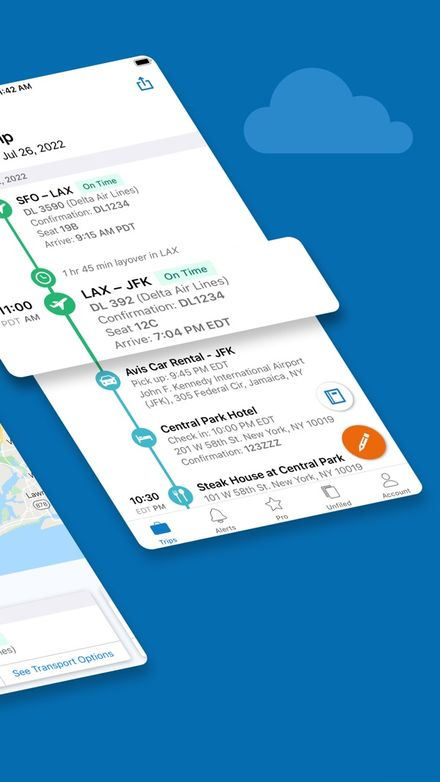</button><figcaption><b>Itinerer kao timeline</b>Let, auto, hotel, večera u jednoj vertikalnoj liniji.</figcaption></figure>
          <figure><button type="button">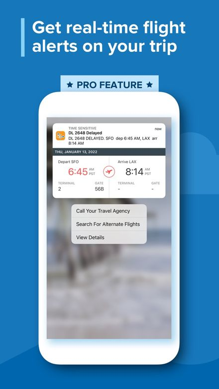</button><figcaption><b>Real-time alert (Pro)</b>Promena se prikazuje kao push i kao stanje stavke.</figcaption></figure>
        </div>
      </article>

    </div>
  </section>

  <section id="odluke">
    <div class="sec-head">
      <span class="eyebrow">Kategorija 2</span>
      <h2>Grupne odluke, ankete i pozivi</h2>
      <p>Najjači deo scenarija: Ari dodaje Rena, pravi anketu za večeru, glasovi stižu uživo, pobednik ide u plan.</p>
      <div class="cat-cover"><span>Korak 3: novi član</span><span>Korak 4–6: anketa</span><span>Korak 7: zatvaranje</span></div>
    </div>
    <div class="apps">

      <article class="app">
        <div class="app-head">
          <div><h3>WhatsApp i iMessage ankete</h3><span class="tag">Ankete unutar grupnog chata</span></div>
          <span class="stats">WhatsApp ★ <b>4,68</b> · 18,8M ocena · iMessage: sistemska app</span>
        </div>
        <div class="notes">
          <div class="note"><h4>Radi dobro</h4><ul><li>Nema trenja: anketa nastaje usred razgovora; u iOS 26 Apple Intelligence sam predloži anketu kad se u chatu pomene više opcija</li><li>iMessage: trake rastu uživo sa avatarima glasača, „Add Choice“ za sve, „Poll Details“ pokazuje ko jeste a ko nije glasao</li><li>WhatsApp: do 12 opcija, prekidač za jedan ili više odgovora; od avgusta 2026. vreme zatvaranja, skriveni glasači i @all</li></ul></div>
          <div class="note"><h4>Slabosti</h4><ul><li>Opcije su goli tekst: restoran nema sliku, ocenu, cenu ni udaljenost (Telegram od marta 2026. dozvoljava lokaciju u opciji, i dalje bez ocene i cene)</li><li>Rezultat ostaje poruka u chatu, tone ispod novih poruka i niko ga ne prenosi u plan</li><li>iMessage nema zatvaranje ni izbor samo jedne opcije i isključuje Android; Telegram šalje kreatoru push za svaki glas</li></ul></div>
          <div class="note tripup"><h4>Za TripUp</h4><ul><li>Preuzmi vizuelni jezik: avatari na opciji, popunjena vodeća opcija, lista „još nisu glasali“</li><li>Dodaj ono što fali: kartice mesta, rok sa odbrojavanjem, eksplicitan čip „Vodi“</li><li>Zatvaranje ankete pravi stavku u itinereru; organizator može da poništi</li></ul></div>
        </div>
        <div class="shots wide">
          <figure><button type="button">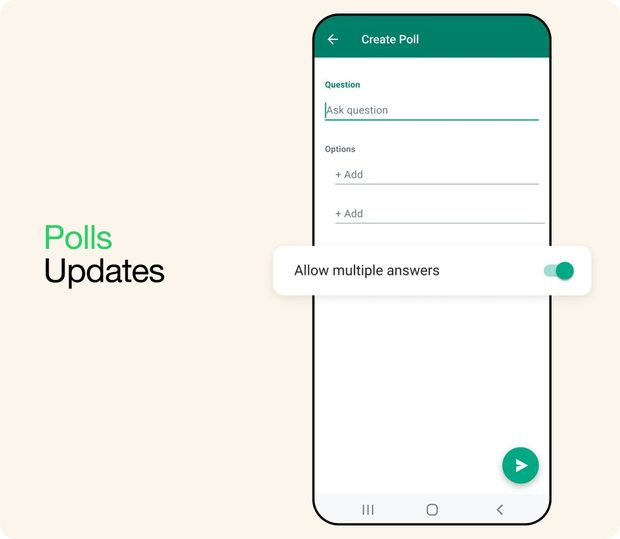</button><figcaption><b>WhatsApp: kreiranje ankete</b>Pitanje, opcije kao tekst, prekidač „Allow multiple answers“.</figcaption></figure>
          <figure><button type="button">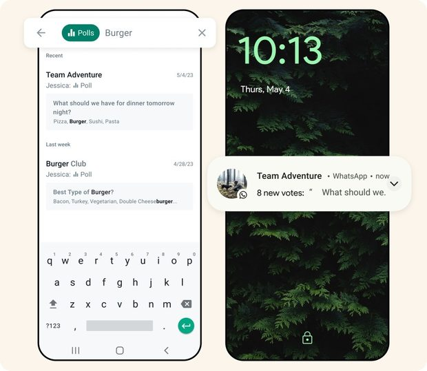</button><figcaption><b>WhatsApp: pretraga i notifikacija</b>Filter „Polls“ u pretrazi; glasovi se grupišu u jednu notifikaciju („8 new votes“).</figcaption></figure>
          <figure><button type="button">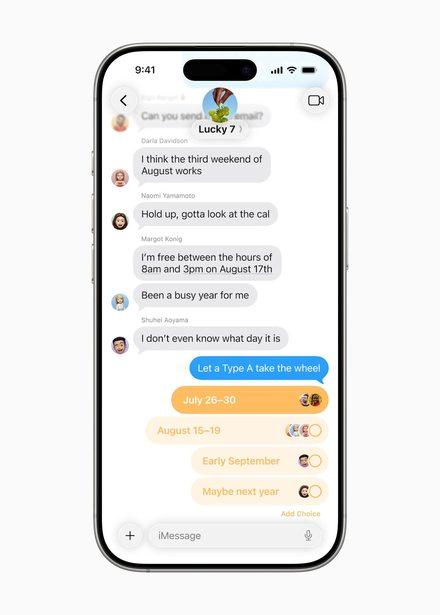</button><figcaption><b>iMessage (iOS 26)</b>Vodeća opcija popunjena bojom, avatari glasača na opciji, „Add Choice“ za sve.</figcaption></figure>
        </div>
      </article>

      <article class="app">
        <div class="app-head">
          <div><h3>Howbout</h3><span class="tag">Deljeni kalendar i planovi sa prijateljima</span></div>
          <span class="stats">★ <b>4,82</b> · 51.094 ocena (US)</span>
        </div>
        <div class="notes">
          <div class="note"><h4>Radi dobro</h4><ul><li>Plan je objekat: detalji, ko dolazi, chat i anketa na jednom mestu (tabovi Details / Chat)</li><li>„Suggest new time“ kao brza alternativa novoj anketi</li><li>Notifikacije kažu šta se tačno promenilo: „Alex changed the start time“</li></ul></div>
          <div class="note"><h4>Slabosti</h4><ul><li>Fokus je na kalendaru i vremenu, ne na mestu ni putovanju</li><li>Višednevni trip ne postoji kao pojam: svaki plan je zaseban događaj</li><li>Nema troškova ni plaćanja</li></ul></div>
          <div class="note tripup"><h4>Za TripUp</h4><ul><li>Anketa pripada konkretnom slotu plana („Večera, sub 20:00“), ne opštem chatu</li><li>Notifikacija opisuje promenu: „Ren se pridružio“, „Time Out Market vodi 3:1“</li><li>Details / Chat podela za svaku stavku itinerera</li></ul></div>
        </div>
        <div class="shots">
          <figure><button type="button">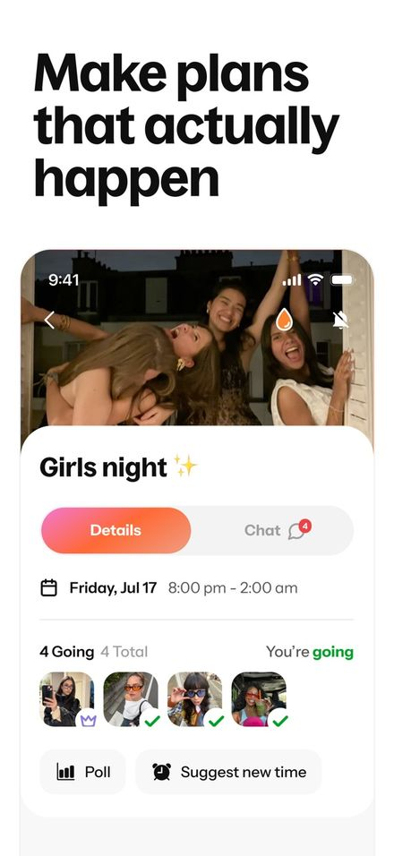</button><figcaption><b>Plan kao objekat</b>Details/Chat, ko dolazi (avatari), dugmad Poll i Suggest new time.</figcaption></figure>
          <figure><button type="button">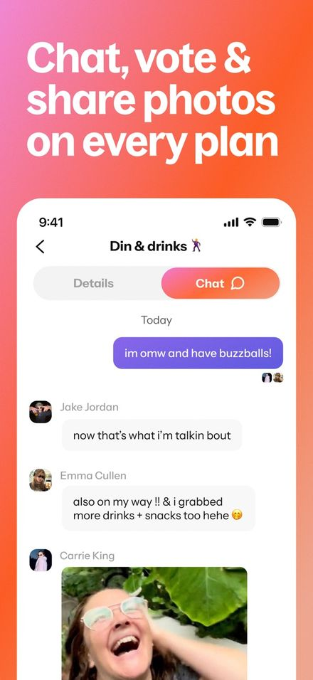</button><figcaption><b>Chat unutar plana</b>Razgovor živi uz konkretan plan, ne u opštem chatu.</figcaption></figure>
          <figure><button type="button">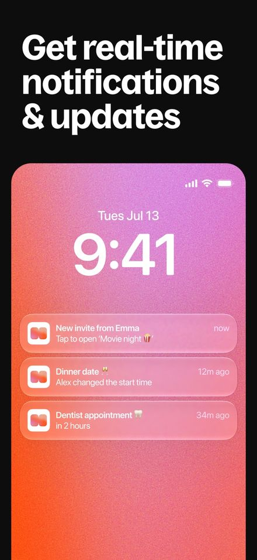</button><figcaption><b>Konkretne notifikacije</b>„Alex changed the start time“: notifikacija kaže šta se promenilo.</figcaption></figure>
          <figure><button type="button">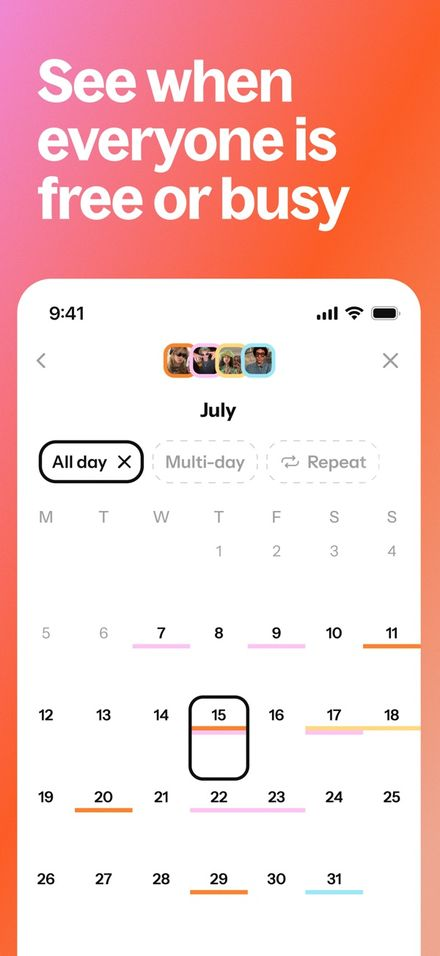</button><figcaption><b>Dostupnost grupe</b>Kalendar pokazuje kad su svi slobodni.</figcaption></figure>
        </div>
      </article>

      <article class="app">
        <div class="app-head">
          <div><h3>Partiful</h3><span class="tag">Pozivnice za događaje, RSVP, feed</span></div>
          <span class="stats">★ <b>4,95</b> · 272.849 ocena (US)</span>
        </div>
        <div class="notes">
          <div class="note"><h4>Radi dobro</h4><ul><li>Jedan link radi bez aplikacije: RSVP iz browsera</li><li>„Find a Time“: gosti glasaju Yes / Maybe / No, host tapne „Pick this“, a glasovi se sami pretvaraju u RSVP. Najbliže automatizaciji odluke od svih velikih aplikacija</li><li>Activity feed sa reakcijama zamenjuje čitanje chata</li></ul></div>
          <div class="note"><h4>Slabosti</h4><ul><li>Anketa postoji samo za datum i vreme; za ostalo help centar predlaže emoji reakcije u feedu</li><li>Gosti pozvani posle ankete je ne vide</li><li>Jedan događaj, ne višednevni trip; korisnici push notifikacije opisuju kao pritisak</li></ul></div>
          <div class="note tripup"><h4>Za TripUp</h4><ul><li>Ren dobija link, otvara trip u browseru i glasa bez naloga</li><li>Novi član vidi otvorene ankete i kratak rezime već donetih odluka</li><li>Feed „šta se promenilo“ za participante koji ne žele da čitaju chat</li></ul></div>
        </div>
        <div class="shots">
          <figure><button type="button">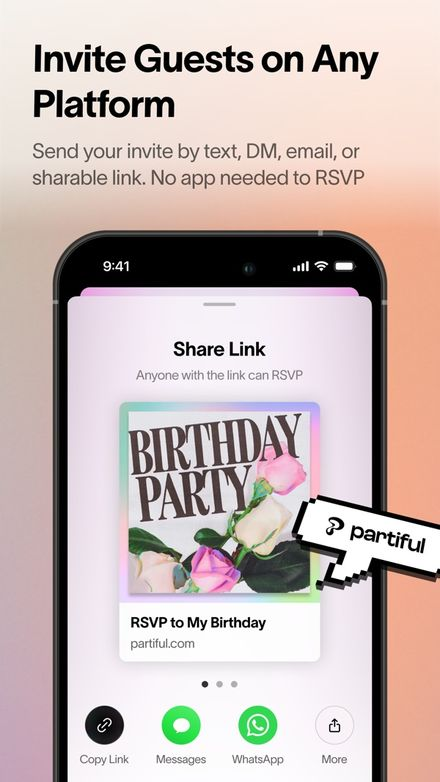</button><figcaption><b>Poziv preko linka</b>SMS, WhatsApp, kopiraj link. RSVP bez instalirane aplikacije.</figcaption></figure>
          <figure><button type="button">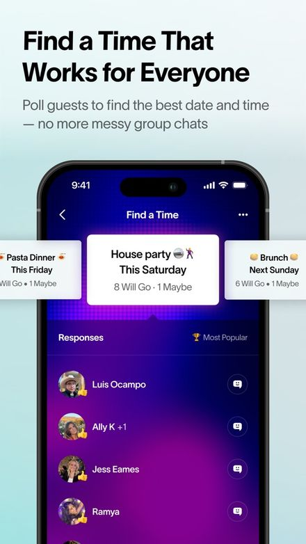</button><figcaption><b>Anketa „Find a Time“</b>Opcije kao kartice, broj glasova, „Most Popular“ oznaka.</figcaption></figure>
          <figure><button type="button">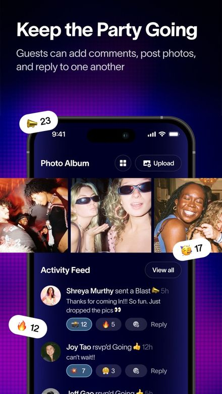</button><figcaption><b>Activity feed</b>Ko je odgovorio, ko je objavio, reakcije. Pregled bez čitanja chata.</figcaption></figure>
          <figure><button type="button">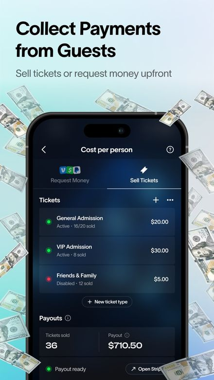</button><figcaption><b>Cost per person</b>Zahtev za novac ili ulaznice unapred, pregled isplata.</figcaption></figure>
        </div>
      </article>

    </div>
  </section>

  <section id="troskovi">
    <div class="sec-head">
      <span class="eyebrow">Kategorija 3</span>
      <h2>Deljenje troškova i poravnanje</h2>
      <p>Ari unosi večeru, Ren i Nic ne plaćaju vino, balansi se ažuriraju, dugovi se konsoliduju u što manje transfera.</p>
      <div class="cat-cover"><span>Korak 8: unos troška</span><span>Korak 9: balansi</span><span>Korak 10: settle up</span></div>
    </div>
    <div class="apps">

      <article class="app">
        <div class="app-head">
          <div><h3>Splitwise</h3><span class="tag">Kategorijski standard, SAD</span></div>
          <span class="stats">★ <b>4,00</b> · 28.955 ocena (US)</span>
        </div>
        <div class="notes">
          <div class="note"><h4>Radi dobro</h4><ul><li>Najzreliji izbor podela: jednako, tačni iznosi, procenti, udeli, više platilaca</li><li>„Simplify debts“ menja ko kome plaća, nikad ukupni balans; može da ga uključi bilo koji član</li><li>Novo, 14. okt 2026, besplatno za US/UK: Itemize. Jedna osoba slika račun, svako preuzima svoje stavke, gosti ulaze preko QR koda bez naloga</li></ul></div>
          <div class="note"><h4>Slabosti</h4><ul><li>Besplatna verzija: najviše 4 troška dnevno, uz reklame. Limit najviše boli baš na putovanju; ocena je pala na 4,0</li><li>Plaćanje u aplikaciji samo u SAD (Splitwise Pay, Venmo, PayPal) i delu EU (Pay by Bank: UK, DE, AT); drugde ručni „Record a payment“</li><li>Simplify debts je objašnjen samo tekstom; konverzija valuta je Pro i nema poravnanja preko valuta</li></ul></div>
          <div class="note tripup"><h4>Za TripUp</h4><ul><li>Preuzmi hijerarhiju: ukupni balans, pa grupa, pa stavka, i jasno „duguješ / duguju ti“</li><li>Nikad ne ograničavaj unos troška ni konverziju valute; monetizuj po tripu</li><li>Itemize potvrđuje pravac ka podeli po stavkama; TripUp to treba da radi i bez obaveznog slikanja računa</li></ul></div>
        </div>
        <div class="shots">
          <figure><button type="button">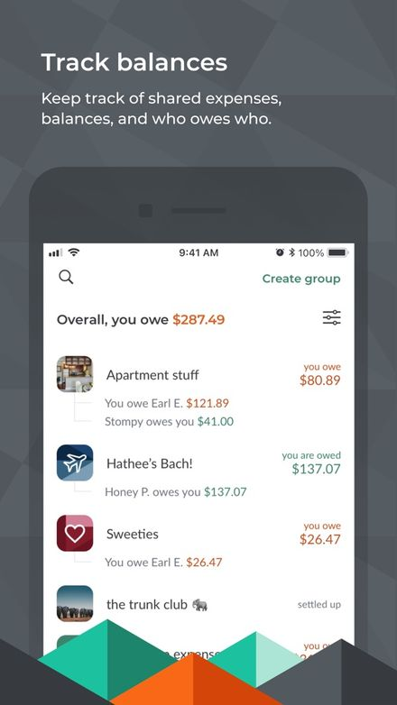</button><figcaption><b>Ukupni balans</b>„Overall, you owe“, pa balans po grupi: narandžasto duguješ, zeleno duguju tebi.</figcaption></figure>
          <figure><button type="button">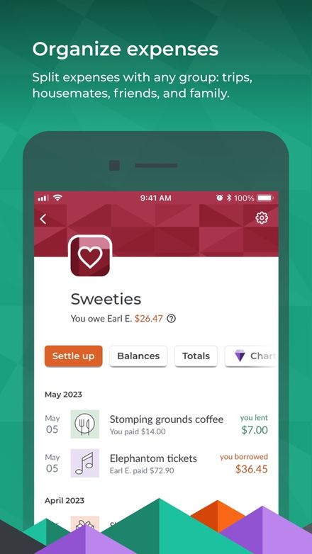</button><figcaption><b>Ekran grupe</b>Settle up kao primarna akcija, Balances, Totals, lista troškova po mesecu.</figcaption></figure>
          <figure><button type="button">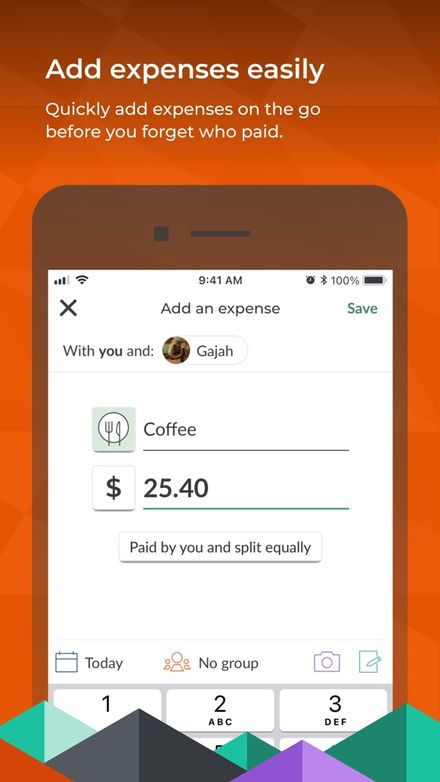</button><figcaption><b>Dodaj trošak</b>Opis i iznos, podela je jedna rečenica: „Paid by you and split equally“.</figcaption></figure>
          <figure><button type="button">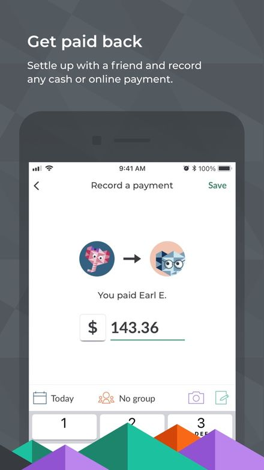</button><figcaption><b>Record a payment</b>Uplata se ručno beleži. Novac se šalje van aplikacije.</figcaption></figure>
        </div>
      </article>

      <article class="app">
        <div class="app-head">
          <div><h3>Tricount</h3><span class="tag">Evropski lider, deo bunq banke</span></div>
          <span class="stats">★ <b>4,88</b> · 7.460 (US) · 97.002 (FR)</span>
        </div>
        <div class="notes">
          <div class="note"><h4>Radi dobro</h4><ul><li>Potpuno besplatno, bez reklama i limita: direktan odgovor na Splitwise paywall</li><li>Pri unosu se bira ko učestvuje, pa jednako ili po udelima i iznosima</li><li>„Suggested repayments“ su uvek uključeni; radi offline; troškovi sa bunq kartice se sami dodaju</li></ul></div>
          <div class="note"><h4>Slabosti</h4><ul><li>Nema podele po stavkama: vino za deo stola znači poseban trošak ili ručnu računicu</li><li>Help centar ima pitanje „zašto plaćam nekome ko nije platio za mene“, što je dokaz da minimizacija zbunjuje</li><li>Linkovi za naplatu rade samo u NL, DE, FR i BE, kartica košta 2,5%; posle redizajna nestali su export i pregledi</li></ul></div>
          <div class="note tripup"><h4>Za TripUp</h4><ul><li>Preuzmi checkbox i 2x / 1x / 0x: isključivanje jednim tapom</li><li>Balans prati rečenica koja objašnjava („Julia i Paul treba da ti vrate“), ne samo brojevi</li><li>Objasni minimizaciju pre nego što zbuni: „6 transfera postaje 2“</li></ul></div>
        </div>
        <div class="shots">
          <figure><button type="button">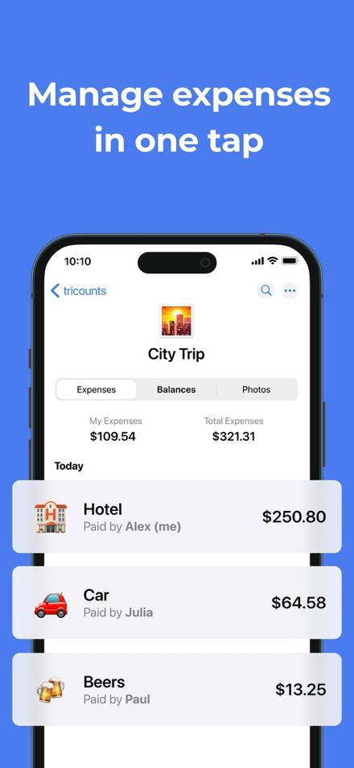</button><figcaption><b>Trip: Expenses / Balances / Photos</b>Moji troškovi naspram ukupnih, ikonice kategorija.</figcaption></figure>
          <figure><button type="button">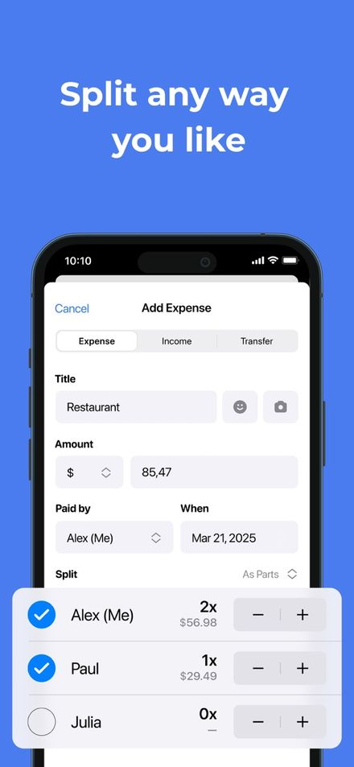</button><figcaption><b>Podela „As parts“</b>Checkbox po osobi i 2x / 1x / 0x. Isključivanje je jedan tap.</figcaption></figure>
          <figure><button type="button">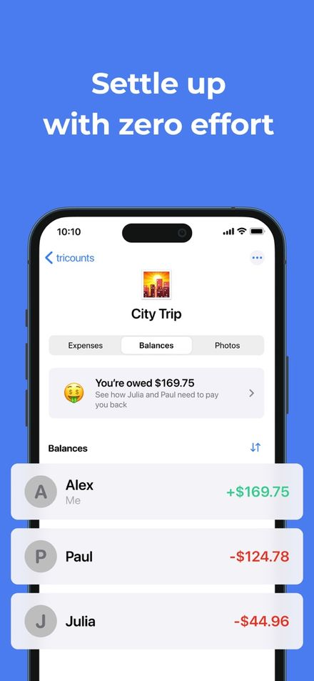</button><figcaption><b>Balansi sa objašnjenjem</b>„You're owed $169.75 — see how Julia and Paul need to pay you back“.</figcaption></figure>
          <figure><button type="button">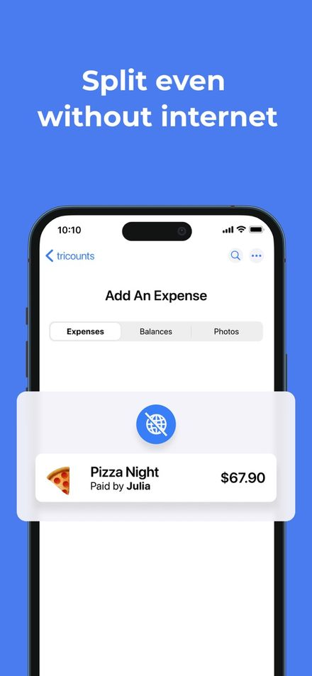</button><figcaption><b>Offline</b>Trošak se unosi bez mreže i sinhronizuje kasnije.</figcaption></figure>
        </div>
      </article>

      <article class="app">
        <div class="app-head">
          <div><h3>Settle Up</h3><span class="tag">Najeksplicitnija minimizacija dugova</span></div>
          <span class="stats">★ <b>4,82</b> · 1.771 ocena (US)</span>
        </div>
        <div class="notes">
          <div class="note"><h4>Radi dobro</h4><ul><li>„Minimize the number of debts“ je vidljiv prekidač i glavna poruka proizvoda</li><li>Brz unos (prvo platilac), udeli sa težinom (par se računa kao 2), automatski podsetnici dužnicima</li><li>Balansi u browseru bez instalacije; propusnica po grupi (nedelja $5,99, mesec $14,99) je monetizacija po tripu</li></ul></div>
          <div class="note"><h4>Slabosti</h4><ul><li>Korisnici u recenzijama traže isključivanje iz jedne stavke („nečije skupo piće“), bez odgovora</li><li>Plaćanje iz aplikacije postoji samo za češke banke</li><li>Zastareo izgled, reklame u besplatnoj verziji</li></ul></div>
          <div class="note tripup"><h4>Za TripUp</h4><ul><li>Minimizacija uključena po defaultu, sa listom predloženih transfera „ko → kome“</li><li>Podsetnik za plaćanje kao blaga akcija, ne kao stalni push</li><li>Razmotri propusnicu po tripu umesto mesečne pretplate</li></ul></div>
        </div>
        <div class="shots">
          <figure><button type="button">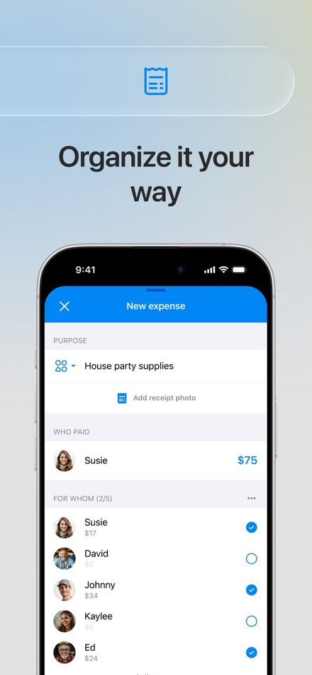</button><figcaption><b>Novi trošak: „For whom“</b>Lista članova sa checkbox-om i iznosom po osobi.</figcaption></figure>
          <figure><button type="button">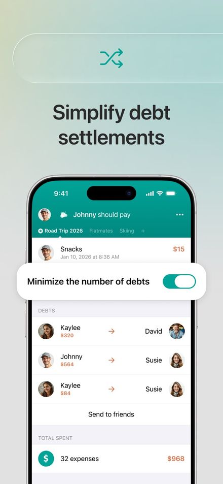</button><figcaption><b>Minimize the number of debts</b>Prekidač i lista predloženih transfera: ko kome šalje koliko.</figcaption></figure>
          <figure><button type="button">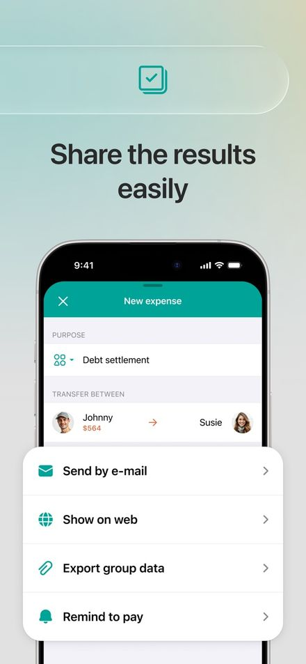</button><figcaption><b>Podsetnik i deljenje</b>Remind to pay, slanje mejlom, web prikaz, export.</figcaption></figure>
        </div>
      </article>

      <article class="app">
        <div class="app-head">
          <div><h3>Tab</h3><span class="tag">Podela jednog računa po stavkama</span></div>
          <span class="stats">★ <b>4,22</b> · 1.157 ocena (US)</span>
        </div>
        <div class="notes">
          <div class="note"><h4>Radi dobro</h4><ul><li>Kamera pretvara račun u listu stavki</li><li>Svako sa svog telefona preuzima svoje stavke; deljene stavke se dele same</li><li>Porez i napojnica se raspodeljuju proporcionalno; Venmo integracija</li></ul></div>
          <div class="note"><h4>Slabosti</h4><ul><li>Jedan račun, bez trajnih balansa grupe kroz ceo trip</li><li>Ocena 4,22, uži krug korisnika</li><li>Splitwise Itemize (okt 2026) sada besplatno pokriva isti slučaj</li></ul></div>
          <div class="note tripup"><h4>Za TripUp</h4><ul><li>Najbliža referenca za „Ren i Nic ne plaćaju vino“: matrica stavka × ljudi</li><li>Slikanje računa kao opcija, ne kao jedini put do podele po stavkama</li><li>Ne teraj svakog da preuzima stavke: Ari isključi dvoje i gotovo</li></ul></div>
        </div>
        <div class="shots">
          <figure><button type="button">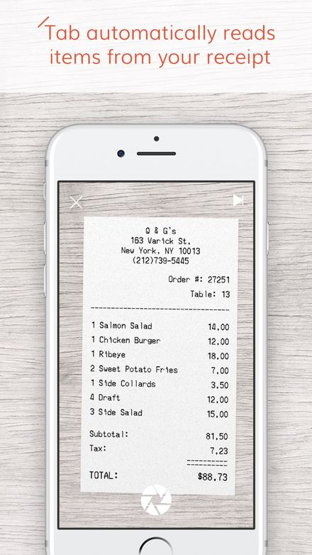</button><figcaption><b>Skeniranje računa</b>Kamera čita stavke i cene sa računa.</figcaption></figure>
          <figure><button type="button">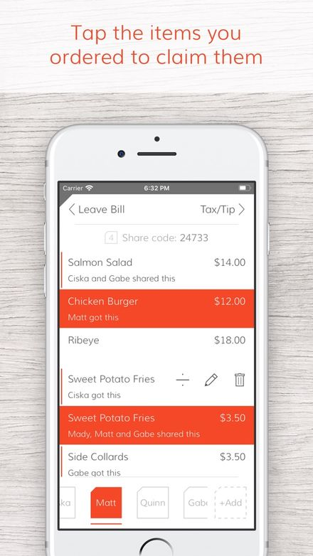</button><figcaption><b>Tapni šta si naručio</b>Svako sa svog telefona preuzima stavke; deljene stavke se dele.</figcaption></figure>
          <figure><button type="button">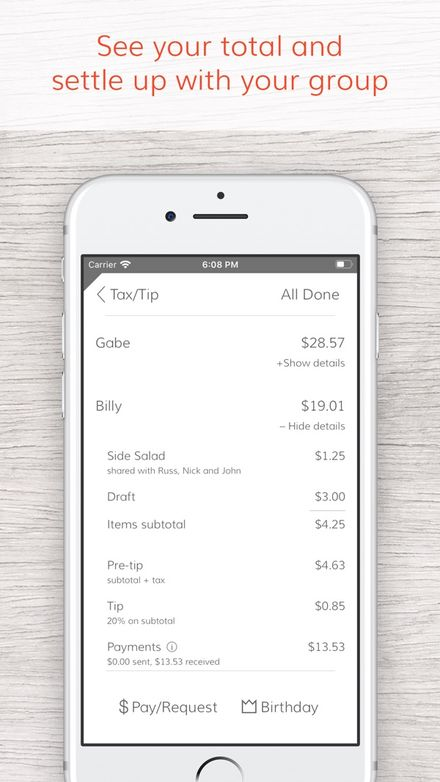</button><figcaption><b>Ukupno po osobi</b>Stavke, porez i napojnica proporcionalno, Pay/Request.</figcaption></figure>
        </div>
      </article>

      <article class="app">
        <div class="app-head">
          <div><h3>Splid</h3><span class="tag">Bez naloga, jak u Nemačkoj</span></div>
          <span class="stats">★ <b>4,91</b> · 4.160 (US) · 40.011 (DE)</span>
        </div>
        <div class="notes">
          <div class="note"><h4>Radi dobro</h4><ul><li>Bez registracije: grupa se deli jednim prekidačem, radi i offline</li><li>Više od 150 valuta sa automatskom konverzijom, besplatno</li><li>Čist ekran balansa sa jednim dugmetom „Settle Up“ i minimizacijom plaćanja</li></ul></div>
          <div class="note"><h4>Slabosti</h4><ul><li>Nema plaćanja u aplikaciji: poravnanje je ručno</li><li>Nema podele po stavkama ni slikanja računa</li><li>Korisnici traže notifikaciju kad se trošak obriše i podrazumevani identitet „ja“</li></ul></div>
          <div class="note tripup"><h4>Za TripUp</h4><ul><li>„No sign-up needed“ kao standard za goste poput Rena</li><li>Valuta po trošku, balans u valuti tripa, bez paywall-a</li><li>Jedan jasan CTA odmah ispod balansa</li></ul></div>
        </div>
        <div class="shots">
          <figure><button type="button">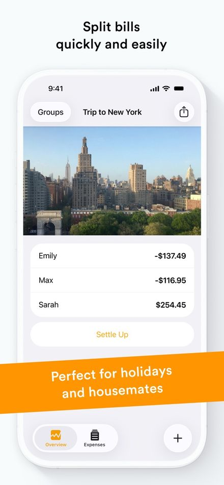</button><figcaption><b>Balansi + Settle Up</b>Slika tripa, balans po osobi, jedno dugme za poravnanje.</figcaption></figure>
          <figure><button type="button">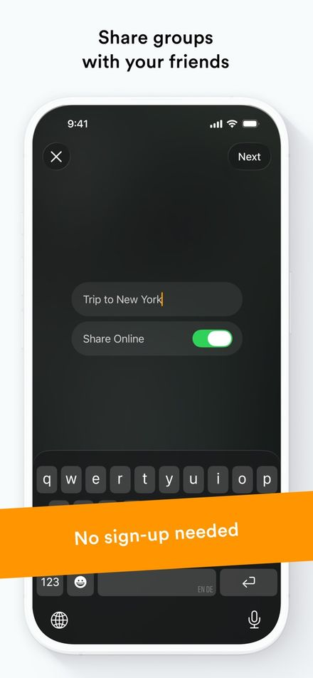</button><figcaption><b>Bez registracije</b>Grupa se deli online jednim prekidačem, bez naloga.</figcaption></figure>
          <figure><button type="button">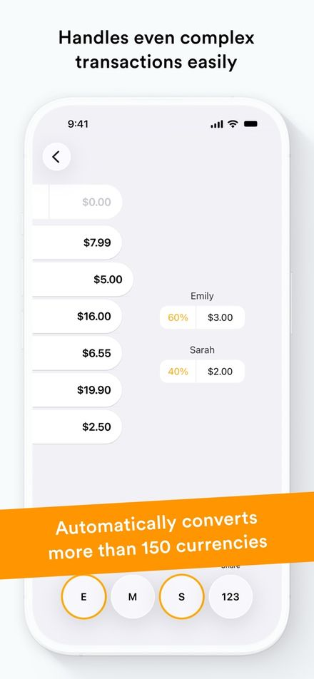</button><figcaption><b>Složena podela</b>Procenti i iznosi po osobi, 150+ valuta automatski.</figcaption></figure>
        </div>
      </article>

    </div>
  </section>

  <section id="placanje">
    <div class="sec-head">
      <span class="eyebrow">Kategorija 4</span>
      <h2>Plaćanje i potvrda da su svi kvit</h2>
      <p>Scenario traži da se dug plati u aplikaciji i da grupa dobije potvrdu. Ovde se većina aplikacija za troškove zaustavlja.</p>
      <div class="cat-cover"><span>Korak 10: plaćanje</span><span>Korak 11: potvrda</span></div>
    </div>
    <div class="apps">

      <article class="app">
        <div class="app-head">
          <div><h3>Venmo Groups</h3><span class="tag">Zajednički troškovi gde se novac stvarno pomera</span></div>
          <span class="stats">★ <b>4,85</b> · 15,5M ocena (US)</span>
        </div>
        <div class="notes">
          <div class="note"><h4>Radi dobro</h4><ul><li>Groups (nov 2023): u svakom trošku se menja udeo ili isključuje član; uvek najmanji broj plaćanja</li><li>Dugme „Pay“ na vrhu feeda pokazuje koliko duguješ, uz Pay ili Remind</li><li>Kad svi plate, na vrhu feeda se pojavi poruka „all paid up“: jedino stanje zatvaranja na tržištu</li></ul></div>
          <div class="note"><h4>Slabosti</h4><ul><li>Samo SAD i dolari; svaki član mora imati Venmo nalog; do 30 članova</li><li>Ko unese trošak, automatski se smatra platiocem</li><li>Nema podele po stavkama ni slikanja računa</li></ul></div>
          <div class="note tripup"><h4>Za TripUp</h4><ul><li>Poravnanje je jedan tap sa unapred popunjenim iznosom, ne ručni zapis</li><li>„Svi smo kvit“ treba da bude grupni događaj: kartica u feedu i push svima</li><li>Bilo ko može da unese trošak za bilo koga</li></ul></div>
        </div>
        <div class="shots">
          <figure><button type="button">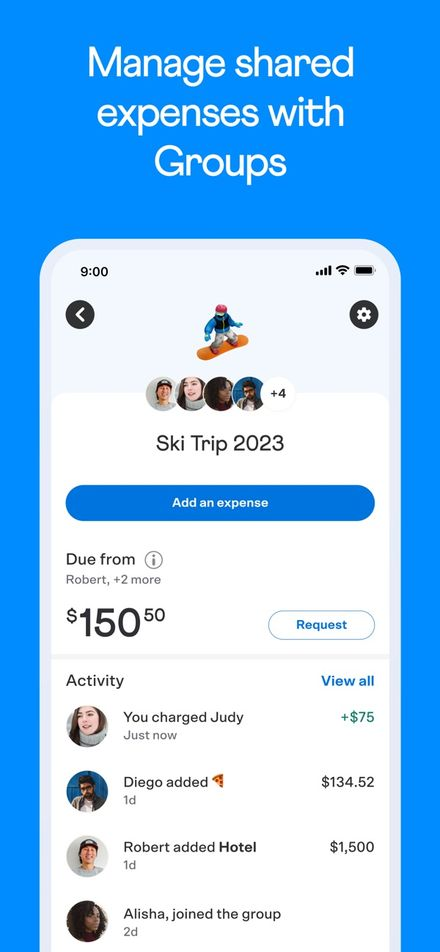</button><figcaption><b>Groups</b>„Due from“ sa dugmetom Request, feed aktivnosti grupe.</figcaption></figure>
          <figure><button type="button">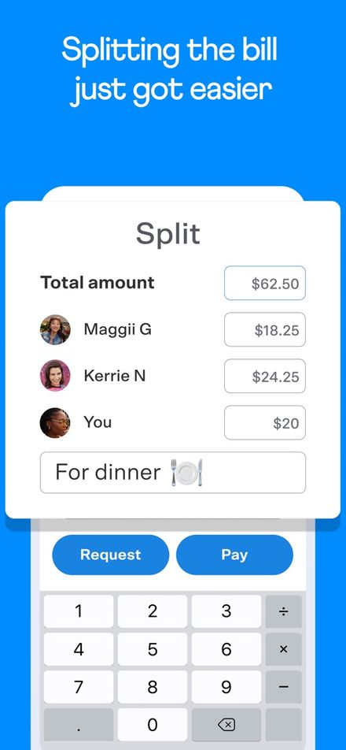</button><figcaption><b>Split</b>Ukupan iznos, iznos po osobi, Request ili Pay u istom ekranu.</figcaption></figure>
          <figure><button type="button">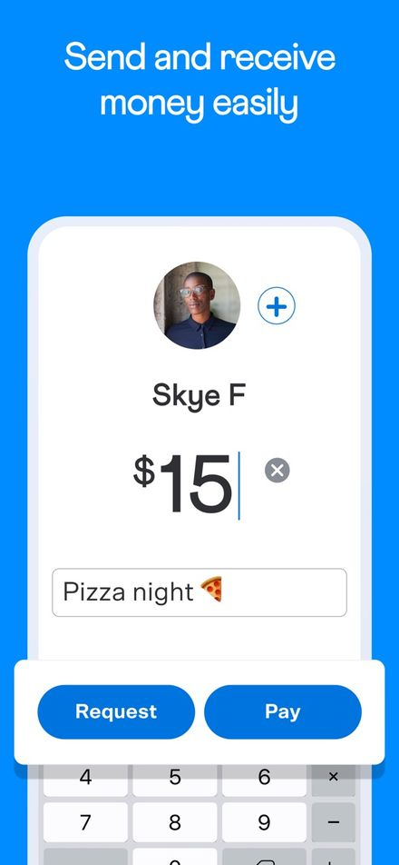</button><figcaption><b>Request / Pay</b>Primalac, iznos, opis. Dve akcije, bez dodatnih koraka.</figcaption></figure>
        </div>
      </article>

      <article class="app textcard">
        <div class="app-head">
          <div><h3>Revolut, bunq i bankovni transfer</h3><span class="tag">Evropske šine za poravnanje</span></div>
          <span class="stats">Revolut ★ <b>4,72</b> · 74k (US) · 1,09M (UK)</span>
        </div>
        <div class="notes">
          <div class="note"><h4>Šta postoji</h4><ul><li>Revolut Group Bills (2–20 osoba, od 2020) i Split bill za jednu transakciju: samo jednako ili tačni iznosi, minimizacija nije dokumentovana</li><li>Između Revolut korisnika plaćanje je instant i besplatno; ostali dobijaju link za plaćanje karticom koji ističe za 7 dana</li><li>bunq + Tricount: linkovi za iDEAL, Bancontact i Sofort samo u NL, DE, FR, BE</li><li>Splitwise Pay by Bank preko Tink-a: UK, DE, AT, samo tekući računi, bez plaćanja između valuta</li></ul></div>
          <div class="note tripup"><h4>Za TripUp</h4><ul><li>Nijedna šina ne pokriva celu grupu. Jedno dugme „Plati“ bira najbolji put za svaki par: bankovni link, Revolut ili PayPal link, IBAN sa popunjenim pozivom na broj</li><li>Uspešna uplata sama zatvara dug; ručno „označi kao plaćeno“ ostaje samo kao rezerva</li><li>Prototip može da simulira ceo tok: izbor metode, potvrda, stanje „Izmireno“ vidljivo celoj grupi</li></ul></div>
        </div>
      </article>

    </div>
  </section>

  <section id="pravac">
    <div class="sec-head">
      <span class="eyebrow">Pravac za dizajn</span>
      <h2>Preuzmi, unapredi, uradi drugačije</h2>
      <p>Brief eksplicitno traži da prepoznaš kad je konkurencija napravila dobar UX izbor, kad ga vredi unaprediti i kad treba drugačiji pristup. Ovo je ta podela.</p>
    </div>
    <div class="verdicts">
      <div class="verdict">
        <h3>Preuzmi</h3>
        <p>Dokazani obrasci. Korisnici ih već znaju, nema razloga da se izmišljaju.</p>
        <ul>
          <li>Hijerarhija balansa: ukupno, grupa, stavka, uz jasno „duguješ / duguju ti“ <span>(Splitwise, Tricount)</span></li>
          <li>Checkbox po osobi i 2x / 1x / 0x pri unosu troška <span>(Tricount)</span></li>
          <li>Avatari glasača na opciji, popunjena vodeća opcija, „ko još nije glasao“ <span>(iMessage)</span></li>
          <li>Dnevni timeline sa mapom i minutima hoda <span>(Wanderlog, TripIt)</span></li>
          <li>Ulaz preko linka bez naloga <span>(Partiful, Splid, Lambus)</span></li>
          <li>Valuta po trošku i offline unos <span>(Tricount, Splid)</span></li>
        </ul>
      </div>
      <div class="verdict">
        <h3>Unapredi</h3>
        <p>Postoji na tržištu, ali je urađeno upola ili zbunjuje.</p>
        <ul>
          <li>Opcije ankete kao kartice mesta sa slikom, ocenom, cenom i minutima hoda <span>(umesto golog teksta)</span></li>
          <li>Rok sa odbrojavanjem i čip „Vodi“ sa razlikom u glasovima <span>(WhatsApp i Telegram imaju samo rok)</span></li>
          <li>Isključivanje iz stavke bez slikanja računa: „Vino €48“ u večeri, tap na dva avatara <span>(Splitwise Itemize, Tab)</span></li>
          <li>Minimizacija sa vizuelnim „6 → 2 transfera“ i objašnjenjem <span>(umesto FAQ članaka)</span></li>
          <li>Notifikacije po ulozi: participant dva pusha po anketi, organizator sažetak <span>(umesto pusha za svaki glas)</span></li>
        </ul>
      </div>
      <div class="verdict diff">
        <h3>Uradi drugačije</h3>
        <p>Niko od velikih ovo ne radi. Ovde je diferencijacija.</p>
        <ul>
          <li>Odluka je stanje plana, ne poruka: zatvorena anketa sama upisuje pobednika u itinerer, uz undo</li>
          <li>Kasni član kao ravnopravan: vidi otvorene ankete i rezime odluka, ne nasleđuje stare troškove</li>
          <li>Jedno dugme „Plati“ bira šinu za svaki par i samo zatvara dug</li>
          <li>„Svi smo kvit“ kao grupni momenat: kartica u feedu, push svima, trip se zatvara</li>
          <li>Monetizacija po tripu, nikad limit na unos troška</li>
        </ul>
      </div>
    </div>
  </section>

  <section id="izvori">
    <div class="sec-head">
      <span class="eyebrow">Metodologija i izvori</span>
      <h2>Odakle su podaci</h2>
      <p>Popularnost: Apple iTunes Search i Lookup API, US prodavnica plus GB, DE, FR i IT, povučeno 20. oktobra 2026. Ekrani: App Store marketinški screenshotovi (pravi UI u marketinškom okviru); WhatsApp slike iz Meta newsroom-a (maj 2023); iMessage slika je Apple-ova zvanična press slika za iOS 26. Klik na bilo koji ekran ga uvećava. Za kompletne tap-po-tap tokove proveri Mobbin (traži nalog). Reddit nije bio dostupan, pa je sentiment iz App Store recenzija i članaka. Tvrdnje preuzete sa sajtova konkurenata su tako i označene u izvorima. Splitwise Itemize je objavljen 14. oktobra 2026; njegov UI nisam video.</p>
    </div>
    <div class="sources">
      <p><b>Ankete i odluke.</b> <a href="https://blog.whatsapp.com/new-updates-to-polls-and-sharing-with-captions-on-whatsapp">WhatsApp: single-vote ankete (2023)</a> · <a href="https://blog.whatsapp.com/your-group-chats-upgraded-introducing-better-polls-all-and-more">WhatsApp: rok, skriveni glasači, @all (avg 2026)</a> · <a href="https://about.fb.com/news/2023/05/whatsapp-polls-updates-sharing-with-captions/">Meta newsroom slike</a> · <a href="https://support.apple.com/guide/iphone/poll-people-in-a-conversation-iphde1787df4/ios">Apple: ankete u Messages</a> · <a href="https://www.macrumors.com/how-to/ios-create-polls-messages-app/">MacRumors</a> · <a href="https://telegram.org/blog/ai-editor-mighty-polls-and-more/">Telegram: ankete sa lokacijom i rokom (mart 2026)</a> · <a href="https://help.partiful.com/en-us/articles/15525423-using-find-a-time-to-poll-guests-on-date-and-time">Partiful: Find a Time</a> · <a href="https://help.partiful.com/en-us/articles/15525422-can-i-poll-or-survey-my-guests">Partiful: ostale ankete</a> · <a href="https://help.doodle.com/en/articles/9457340-how-do-i-send-out-a-calendar-invitation-to-my-booked-group-poll">Doodle: Book it</a></p>
      <p><b>Planiranje i grupna putovanja.</b> <a href="https://apps.apple.com/us/app/wanderlog/id1476732439">Wanderlog App Store</a> · <a href="https://nomadcrew.uk/blog/group-trip-apps-break-when-you-share/">NomadCrew o registraciji pozvanih (konkurent)</a> · <a href="https://help.tripit.com/en/support/solutions/articles/103000063367-trip-sharing-from-our-website">TripIt: deljenje i uloge</a> · <a href="https://help.tripit.com/en/support/solutions/articles/103000063435-past-trips">TripIt: prošli tripovi</a> · <a href="https://support.lambus.com/en/article/how-can-i-invite-fellow-travelers">Lambus: pozivanje</a> · <a href="https://www.getlimbo.app/blog/troupe-app-shut-down-alternatives">Troupe ugašen (konkurent)</a> · <a href="https://truceapp.com/">Truce</a> · <a href="https://triprelay.app/blog/best-group-trip-planning-apps">TripRelay (konkurent)</a> · <a href="https://techcrunch.com/2023/11/15/google-maps-gets-more-social-feature-help-you-collaborate-with-friends">Google Maps liste sa glasanjem</a> · <a href="https://www.airbnb.com/help/article/1236">Airbnb wishlist glasanje</a> · <a href="https://www.polarsteps.com/news/polarsteps-launches-summer-2026-release-new-tools-for-planning-privacy-and-sharing">Polarsteps leto 2026</a></p>
      <p><b>Troškovi.</b> <a href="https://www.prnewswire.com/news-releases/splitwise-launches-new-feature-that-takes-the-awkwardness-out-of-splitting-the-check-302907809.html">Splitwise Itemize (okt 2026)</a> · <a href="https://kb.splitwise.com/balances-and-expenses/what-is-simplify-debts">Splitwise: simplify debts</a> · <a href="https://feedback.splitwise.com/knowledgebase/articles/2010350-why-am-i-seeing-an-expense-limit">Splitwise: dnevni limit</a> · <a href="https://kb.splitwise.com/payment-integrations/how-do-i-send-money-to-someone-on-splitwise">Splitwise: plaćanje</a> · <a href="https://tink.com/press/splitwise-tink-partner/">Splitwise + Tink</a> · <a href="https://help.tricount.com/articles/tricount-faqs">Tricount FAQ</a> · <a href="https://help.tricount.com/articles/tricount-request-links">Tricount: linkovi za naplatu</a> · <a href="https://settleup.io">Settle Up</a> · <a href="https://apps.apple.com/us/app/settle-up-group-expenses/id737534985">Settle Up recenzije</a> · <a href="https://splid.app/english">Splid</a> · <a href="https://apps.apple.com/app/id595068606">Tab App Store</a></p>
      <p><b>Plaćanje.</b> <a href="https://newsroom.paypal-corp.com/2023-11-14-Introducing-Venmo-Groups">Venmo Groups (nov 2023)</a> · <a href="https://help.venmo.com/hc/en-us/articles/22900416466067-Adding-and-editing-group-expenses-">Venmo: troškovi u grupi</a> · <a href="https://help.venmo.com/cs/articles/settling-up-group-expenses-vhel192">Venmo: poravnanje i „all paid up“</a> · <a href="https://techcrunch.com/2026/05/11/venmos-biggest-makeover-in-years-comes-at-a-very-interesting-time/">Venmo redizajn 2026</a> · <a href="https://www.finextra.com/pressarticle/83753/revolut-introdcues-group-bills">Revolut Group Bills</a> · <a href="https://help.revolut.com/en-US/help/transfers/group-bills/group-bills-settling-up/">Revolut: poravnanje</a></p>
    </div>
  </section>
</main>
<footer>
  <div class="wrap">Interni research za Bending Spoons Task #2 (TripUp). Screenshotovi pripadaju vlasnicima aplikacija i korišćeni su samo za analizu.</div>
</footer>

<dialog class="lb" id="lb" aria-label="Uvećan ekran">
  <button class="close" id="lb-close" aria-label="Zatvori">×</button>
  
  <p id="lb-cap"></p>
</dialog>

<script>
(function () {
  var lb = document.getElementById('lb'), img = document.getElementById('lb-img'), cap = document.getElementById('lb-cap');
  document.querySelectorAll('figure button').forEach(function (b) {
    b.addEventListener('click', function () {
      var i = b.querySelector('img'), fc = b.parentElement.querySelector('figcaption');
      img.src = i.src; img.alt = i.alt; cap.textContent = fc ? fc.textContent.replace(/\s+/g, ' ').trim() : '';
      if (lb.showModal) lb.showModal();
    });
  });
  document.getElementById('lb-close').addEventListener('click', function () { lb.close(); });
  lb.addEventListener('click', function (e) { if (e.target === lb) lb.close(); });
})();
</script>
